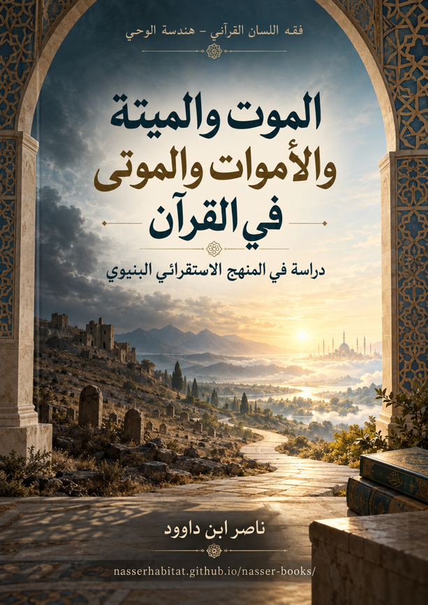

ناصر ابن داوود

نسخة نصية مستخرجة من ملف Word الذي قدمه المؤلف؛ راجع المصدر الأصلي.
جارٍ تجهيز القارئ…
الموت والميتة والأموات والموتى في القرآن
دراسة استقرائية بنيوية في فقه اللسان القرآني
ضمن مشروع: فقه اللسان القرآني – هندسة الوحي
ناصر ابن داوود
2026
صفحة الحقوق والهوية الببليوغرافية
البيان
المعلومة
المؤلف
ناصر ابن داوود
العنوان
الموت والميتة والأموات والموتى في القرآن
العنوان الفرعي
دراسة استقرائية بنيوية في فقه اللسان القرآني
المشروع
فقه اللسان القرآني – هندسة الوحي
الإصدار
الطبعة الأكاديمية النهائية — 2026
اللغة
العربية
حالة النسخة
PUBLICATION READY — CANONICAL VERSION
المكتبة الرقمية
nasserhabitat.github.io/nasser-books/
الرخصة
Creative Commons Attribution-ShareAlike 4.0 International — CC BY-SA 4.0
تُتاح هذه النسخة لأغراض القراءة والبحث وإعادة الاستخدام وفق شروط الرخصة المذكورة، مع نسبة العمل إلى مؤلفه والمحافظة على الرخصة نفسها في الأعمال المشتقة. ولا تمثل النسخ المترجمة أو المختصرة أو المهيأة للويب بديلاً عن هذه النسخة القانونية العربية.
بيان المشروع والنسخة القانونية
ينتمي هذا الكتاب إلى مشروع «فقه اللسان القرآني – هندسة الوحي»، الذي يدرس كيف ينتج النص القرآني معناه من خلال الاستقراء، والسياق، والعلاقات، والمثاني، والاختبار، مع الفصل بين النص والملاحظة والفرضية والقانون والنموذج.
هذه النسخة هي النسخة القانونية العربية المعتمدة للنشر. أي نسخة إنجليزية، أو مختصرة، أو رقمية، أو مهيأة للويب، أو مشتقة لأي جمهور آخر تُعامل بوصفها مشتقًا توزيعيًا مستقلًا، ولا تستبدل هذه النسخة.
الغاية من المجلد مزدوجة: تعليم القارئ كيف يتدبر ويجمع ويقارن ويختبر، وتزويد الباحث بالمادة العلمية والفرضيات والموارد المقاومة والأسئلة المفتوحة حتى يستطيع الحكم ومواصلة البحث.
القاعدة الحاكمة للتحرير: لا نُصلح العلم أثناء التجميع؛ نُصلح تمثيل العلم. لذلك بقيت الحالات العلمية كما أغلقتها الاختبارات: ROOT LAW (القانون الجذري) (م و ت) = 0، وDSAM (المصفوفة التحليلية الخاصة بالموت) = RATIFIED (مصادق عليه)، مع إبقاء الأطروحات المفتوحة في درجاتها الحقيقية.
القاعدة الذهبية للتعريب: الأصل لا يُمحى، والترجمة لا تستبدل الأصل، والتعريب لا يغيّر الحالة العلمية للمعلومة.
ملخص الكتاب
يدرس هذا الكتاب حقل الموت في القرآن من داخل شبكة استعمالاته، لا من تعريف سابق يُفرض على جميع موارده. وقد بُني البحث على مدونة جذر (م و ت) وتوزيعاته الصرفية والسياقية، وعلى اختبار علاقته بالحياة والإحياء، والتوفي، والقتل، والبعث، والأجل، والبرزخ، والرجوع. وانتهت مرحلة التدقيق إلى نتيجة منهجية مركزية: لم يثبت تعريف جذري إيجابي واحد يصمد أمام جميع الموارد؛ ولذلك حُفظت النتيجة القانونية ROOT LAW (القانون الجذري) (م و ت) = 0، مع اعتماد قوانين حدود ونموذج تحليلي يميز بين الحدث، والتصنيف، والوصف، وشبكة العلاقات.
غير أن وظيفة الكتاب لا تقف عند تقديم هذه النتائج. فله هدفان متكاملان: هدف تعليمي يعلّم القارئ كيف يتدبر النص ويجمع موارده ويقارنها ويختبر فرضياته، وهدف علمي يضع بين يدي الباحث المادة العلمية كاملة: النصوص، والجداول، والفرضيات، والموارد المقاومة، والنتائج المفتوحة، والأطروحات السابقة، حتى يستطيع أن يحكم بنفسه ويصحح ويواصل البحث.
ويعتمد الكتاب في التدبر أدوات متكاملة: الاستقراء، والسياق القريب، وموضوع السورة، ومنظومة القرآن، وضرب الآيات بالآيات، ونظام المثاني بوصفه أداةً لتوليد الفرضيات واختبار العلاقات، مع الفصل بين علاقة المثاني وبين الاشتقاق الصرفي. كما يعتمد قاعدة التكامل الدلالي: لا يُلغى المعنى المادي أو المباشر بالمعنى الوظيفي، ولا يُلغى الوظيفي بالمادي؛ بل يُبحث عن إمكان تكاملهما داخل الهداية القرآنية متى سمح السياق وشبكة الآيات بذلك.
هذا الكتاب لا يطلب من القارئ أن يتبنى نتائجه، بل يضع بين يديه النص، وأدوات التدبر، ومسار الاستقراء، والمادة العلمية، والفرضيات والاعتراضات؛ ليتحقق، ويحكم، ويصحح، ويواصل البحث.
المقدمة العامة للكتاب
ترسخ في القراءة الشائعة أن الموت مفهوم واضح لا يحتاج إلى بحث طويل: تنتهي الحياة الجسدية فيسمى ذلك موتًا، ويقابله في الطرف الآخر مفهوم الحياة. لكن جمع الموارد القرآنية يفتح أسئلة أوسع؛ فالقرآن يتحدث عن موت يُذاق، وموت يأتي، وإماتة، وموتة أولى، وأموات وأحياء، وموتى يُبعثون أو يُسمعون، وأرض ميتة تُحيا، وإنسان كان ميتًا فأحياه الله وجعل له نورًا، كما يصف حالة بأنها «لا يموت فيها ولا يحيى».